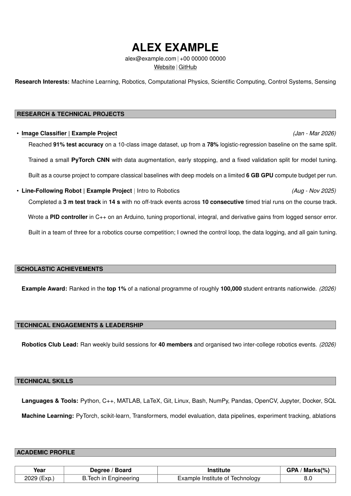
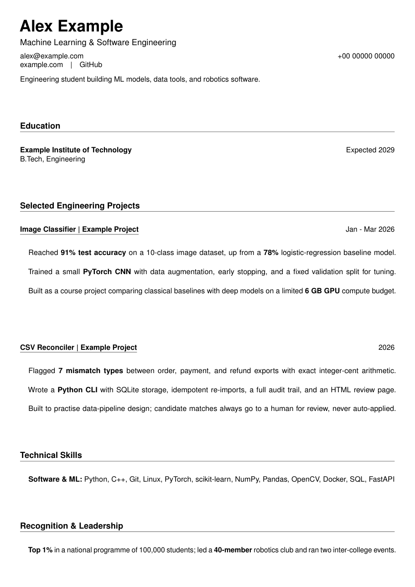

Python command-line tool · MIT licence
ToggleCV
ToggleCV reads your public GitHub repositories into projects.yaml, a file with one on/off switch per project. It suggests three bullets per project, Result, Action and Context (R-A-C), as sentences copied from each README. You edit and approve them. It then rewrites the Projects section of your own LaTeX CV with the enabled projects. A second script, build.py, builds complete one-page research and industry CVs from one YAML file. It refuses to write a PDF that spills onto a second page or contains a bullet that wraps or ends half-empty.
- Python 3.10+
- PyYAML
- Jinja2
- LaTeX / pdfLaTeX
- GitHub REST API
- no LLM
Status: usable from source. Clone the repository and run it locally; there is no hosted service.
01What it does
One file decides which projects appear on a CV. Every project gets the same three-line structure:
What changed? Lead with a measured outcome.
Reached 91% test accuracy, up from a 78% baseline.What did you build, and with what?
Trained a small CNN in PyTorch with augmentation and early stopping.Where, why, for whom, with whom?
Course project comparing baselines with deep models on a 6 GB GPU.With three lines per project, every entry has the same size and the evidence comes first. A project with no result worth stating is easy to see. The examples above are from the README's sample data, not from a real CV.
Try the switches
This demo uses the three sample projects in config.example.yaml. Each project has one boolean per CV profile. Turning a project off removes it from that profile's PDF but keeps its text in the file.
projects:
example-robot:
enabled:
research: true # in cv.pdf
yc: false # left out of YC_CV.pdf, text keptUse real YAML booleans. The strings "false", 0 and 1 are rejected with an error and are not interpreted.
02How it works
togglecv.py: edit the Projects section of your existing CV
- init --user NAMEWrites
projects.yamlfrom your public repos. Every repo starts off and unreviewed. Forks and the profile README repo are skipped. - edit switchesSet
enabled: trueon the projects you want. List order is CV order. - reviewFor each slot, pick a README sentence, edit it, or write your own. It saves only when you answer
y. - apply CV.texWrites
CV.togglecv.texwith the new Projects section.--compilechecks that it builds.
How apply finds the section. If the file has % TOGGLECV:BEGIN and % TOGGLECV:END lines, it replaces only the text between them. It adds these markers the first time, so running it again gives the same result. Otherwise it looks for exactly one heading that contains "Project" (\section, \section*, \subsection or a custom macro). It replaces everything up to the next heading of the same or higher level. If it finds no matching heading, or more than one, it stops and asks you to add the markers. Your original file changes only when you pass --in-place, which also keeps a .bak copy.
Matching the look. style: auto uses Jake's Resume macros when your file defines them, and a nested itemize when it does not. style: custom takes one template entry with placeholders such as <<title_link>>, <<dates>> and <<bullets>>.
How bullets are suggested
The tool fetches the README through the GitHub API. It removes code blocks, tables, images, badges and headings, then ranks the remaining sentences for each slot. Sentences with numbers or outcome words rank high for Result. Build verbs rank high for Action. Purpose and setting rank high for Context. Setup instructions rank low. The suggestions are copied sentences, never generated: there is no language model and no API key. README sentences are usually too long for one CV line, so treat them as raw material.
build.py: complete one-page CVs from one YAML file
GitHub READMEs ──► --draft (you pick/edit/approve) ──┐
▼
config.yaml ──► validate ──► select per profile ──► Jinja2 → LaTeX ──► pdfLaTeX
──► line-fit + 1-page check ──► cv.pdf / YC_CV.pdfA PDF is written only if all of these checks pass:
- The CV is exactly one page and has no overflowing boxes.
- Every bullet, skill row, achievement and leadership line fits on one line. Each line also fills at least 94% of its width before justification.
- Every enabled project has three non-empty bullets.
- Profiles, project order, booleans and field types are valid. Duplicate YAML keys are rejected.
TOO SHORT 88.5% project 5 bullet 1: expand wording without inventing claims
TOO LONG 104.4% project 1 bullet 3: rewrite as one lineWhen a check fails, the previous cv.pdf stays in place. The tool never shrinks fonts or silently drops projects.
03Example output
Both PDFs below were built on 2026-11-19 with python build.py --all from the unmodified config.example.yaml committed in the repository. All names, numbers and projects are placeholder sample data. In that run, both builds reported "all selected lines fill end-to-end" and "1 page, 2 selected projects". The repository's 48 unit tests (test_cv_config, test_readme_draft, test_togglecv) also passed in the same checkout.


cv.pdf, research profile: example-ml and example-robot are on.

YC_CV.pdf, industry profile: example-ml and example-tool are on.04Run it locally
You need Python 3.10+ and pip install -r requirements.txt (PyYAML and Jinja2). To compile PDFs, you also need a TeX distribution with pdflatex, such as MiKTeX or TeX Live.
Use it with your own CV
git clone https://github.com/Avinashistoocool/ToggleCV
cd ToggleCV
pip install -r requirements.txt
python togglecv.py init --user <your-github-username> # 1. projects.yaml from your public repos
# 2. edit projects.yaml: enabled: true on the ones you want
python togglecv.py review # 3. pick/edit/approve bullets from each README
python togglecv.py apply my_cv.tex --compile # 4. writes my_cv.togglecv.tex (+ PDF check)Built-in two-profile builder
copy config.example.yaml config.yaml # macOS/Linux: cp config.example.yaml config.yaml
python build.py --all # build both CVs
python build.py --list # show every project and its switches
python -m unittest test_cv_config -v # run the test suite| Command | What it does |
|---|---|
togglecv.py refresh | Adds new repos (off), updates stars, language and URLs, and follows renames. It never changes your switches, titles, dates or bullets. |
togglecv.py list | Shows the on and reviewed status of every project. |
build.py --sync-github | Refreshes GitHub metadata in config.yaml. New repos are added switched off, with empty bullets. |
build.py --draft [ID ...] | Lets you pick R-A-C bullets from README sentences. It saves only after you approve. |
build.py --tex-only | Writes the LaTeX without compiling or checking it. |
Public repositories need no token. Set GITHUB_TOKEN to read private repositories or to raise the rate limit. config.yaml, projects.yaml, generated CVs and assets/ are git-ignored, so your personal details stay out of the repository.
05Limitations
- The build checks layout, not truth. Keep the source of each number in the project's
notesfield. Do not add claims you cannot support to fill a line. - Suggested bullets are README sentences. They are often too long or written as instructions, so you must edit them.
applyrefuses enabled projects that are not reviewed unless you pass--allow-unreviewed. It also refuses enabled projects that are missing one of the three bullets.- Syncing rewrites the YAML layout and removes custom comments. Put anything you want to keep in
notes. build.pyships with only theresearchandycprofiles. Adding a third profile requires code changes incv_config.pyand a new template.- Bullets longer than 160 characters are flagged. Combining accents are removed with a warning.
06Further reading
- README: full command reference, the
customstyle placeholders and the config field reference. projects.example.yaml: a complete toggle file.config.example.yaml: the sanitized sample used for the PDFs above.